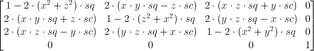
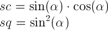
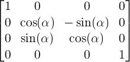
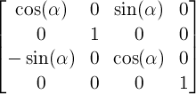
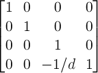

div {
transform: translate(100px, 100px);
}
This transform moves the element by 100 pixels in both the X and Y directions.

CSS transforms allows elements styled with CSS to be transformed in two-dimensional or three-dimensional space. This specification is the convergence of the CSS 2D transforms, CSS 3D transforms and SVG transforms specifications.
This specification merges the former CSS 2D Transforms and CSS 3D Transforms specifications and will also merge CSS Transforms and SVG Transforms. The merge is in progress and the specification is not yet ready for review.
The list of changes made to this specification is available.
This section is not normative.
The CSS visual formatting model describes a coordinate system within each element is positioned. Positions and sizes in this coordinate space can be thought of as being expressed in pixels, starting in the origin of point with positive values proceeding to the right and down.
This coordinate space can be modified with the 'transform' property. Using transform, elements
can be translated, rotated and scaled in two or three dimensional space.
Additional properties make working with transforms easier, and allow the author to control how nested three-dimensional transforms interact.
'transform-origin' property
provides a convenient way to control the origin about which transforms on
an element are applied.
'perspective' property allows the author
to make child elements with three-dimensional transforms appear as if they live in a common
three-dimensional space.
The 'perspective-origin' property provides control
over the origin at which perspective is applied, effectively changing the location of
the "vanishing point".
'transform-style' property allows 3D-transformed
elements and their 3D-transformed descendants to share a common three-dimensional
space, allowing the construction of hierarchies of three-dimensional objects.
'backface-visibility' property comes into play
when an element is flipped around via three-dimensional transforms such that its
reverse side is visible to the viewer. In some situations it is desirable to
hide the element in this situation, which is possible using the value of 'hidden'
for this property.
Note that while some values of the 'transform' property
allow an element to be transformed in a three-dimensional coordinate system, the elements
themselves are not three-dimensional objects. Instead, they exist on a two-dimensional
plane (a flat surface) and have no depth.
Write me
Write me
When used in this specification, terms have the meanings assigned in this section.
A bounding box is the object bounding box for all SVG elements without an associated CSS layout box and the border box for all other elements.
A transformable element in the HTML namespace which is either a block-level or atomic inline-level element, or an element in the SVG namespace (see [[SVG11]]) which has the attributes 'transform', 'patternTransform' or 'gradientTransform'.
A matrix computed from the values of the perspective and perspective-origin properties as described below.
A matrix computed from the values of the transform and transform-origin properties as described below.
A containing block hierarchy of one or more levels, instantiated by elements with a computed value for
the transform-style property of preserve-3d,
whose elements share a common three-dimensional coordinate system.
Specifying a value other than 'none' for the 'transform'
property establishes a new local coordinate system at the element that it is
applied to. The mapping from where the element would have rendered into that local coordinate system
is given by the element's transformation matrix.
Transformations are cumulative. That is, elements establish their local
coordinate system within the coordinate system of their parent. From the perspective of the
user, an element effectively accumulates all the 'transform'
properties of its ancestors as well as any local transform applied to it. The accumulation
of these transforms defines a current transformation matrix (CTM) for the element.
The coordinate space behaves as described in the coordinate system transformations section of the SVG 1.1 specification. This is a coordinate system with two axes: the X axis increases horizontally to the right; the Y axis increases vertically downwards. Three-dimensional transform functions extent this coordinate space into three dimensions, adding a Z axis perpendicular to the plane of the screen, that increases towards the viewer.
The transformation matrix is computed
from the transform and transform-origin properties
as follows:
transform-origintransform property in turntransform-originTransforms apply to transformable elements.
div {
transform: translate(100px, 100px);
}
This transform moves the element by 100 pixels in both the X and Y directions.
div {
height: 100px; width: 100px;
transform: translate(80px, 80px) scale(1.5, 1.5) rotate(45deg);
}
This transform moves the element by 80 pixels in both the X and Y directions, then scales the element by 150%, then rotates it 45° clockwise about the Z axis. Note that the scale and rotation operate about the center of the element, since the element has the default transform-origin of 50% 50%.

Note that an identical rendering can be obtained by nesting elements with the equivalent transforms:
<div style="transform: translate(80px, 80px)">
<div style="transform: scale(1.5, 1.5)">
<div style="transform: rotate(45deg)"></div>
</div>
</div>
In the HTML namespace, the transform property does not affect the flow of the content
surrounding the transformed element. However, the extent of the overflow
area takes into account transformed elements. This behavior is similar
to what happens when elements are offset via relative positioning.
Therefore, if the value of the 'overflow'
property is 'scroll' or 'auto',
scrollbars will appear as needed to see content that is transformed outside the visible area.
In the HTML namespace, any value other than 'none' for the transform results in the creation of both a stacking context and a containing block. The object acts as a containing block for fixed positioned descendants.
Is this affect on position:fixed necessary? If so, need to go into more detail here about why fixed positioned objects should do this, i.e., that it's much harder to implement otherwise.
Normally, elements render as flat planes, and are rendered into the same plane as their containing block. Often this is the plane shared by the rest of the page. Two-dimensional transform functions can alter the appearance of an element, but that element is still rendered into the same plane as its containing block.
Three-dimensional transforms can result in transformation matrices with a non-zero Z component, potentially lifting them off the plane of their containing block. Because of this, elements with three-dimensional transformations could potentially render in an front-to-back order that different from the normal CSS rendering order, and intersect with each other. Whether they do so depends on whether the element is a member of a 3D rendering context, as described below.
This description does not exactly match what WebKit implements. Perhaps it should be changed to match current implementations?
This example shows the effect of three-dimensional transform applied to an element.
<style>
div { height: 150px; width: 150px; }
.container { border: 1px solid black; }
.transformed { transform: rotateY(50deg); }
</style>
<div class="container">
<div class="transformed"></div>
</div>

The transform is a 50° rotation about the vertical, Y axis. Note how this makes the blue box appear narrower, but not three-dimensional.
The perspective and perspective-origin
properties can be used to add a feeling of depth to a scene by making elements higher on the Z axis
(closer to the viewer) appear larger, and those futher away to appear smaller.
The perspective matrix is computed as follows:
perspective-originperspective(<length>) transform function, where the length is provided by the value of the perspective propertyperspective-originThis example shows how perspective can be used to cause three-dimensional transforms to appear more realistic.
<style>
div { height: 150px; width: 150px; }
.container { perspective: 500px; border: 1px solid black; }
.transformed { transform: rotateY(50deg); }
</style>
<div class="container">
<div class="transformed"></div>
</div>

The inner element has the same transform as in the previous example, but its rendering is now influenced by the perspective property on its parent element. Perspective causes vertices that have positive Z coordinates (closer to the viewer) to be scaled up in X and Y, and those futher away (negative Z coordinates) to be scaled down, giving an appearance of depth.
An element with a three-dimensional transform that is not contained in a 3D rendering context renders with the appropriate transform applied, but does not intersect with any other elements. The three-dimensional transform in this case can be considered just as a painting effect, like two-dimensional transforms. Similarly, the transform does not affect painting order. For example, a transform with a positive Z translation may make an element look larger, but does not cause that element to render in front of elements with no translation in Z.
An element with a three-dimensional transform that is contained in a 3D rendering context can visibly interact with other elements in that same 3D rendering context; the set of elements participating in the same 3D rendering context may obscure each other or intersect, based on their computed transforms. They are rendered as if they are all siblings, positioned in a common 3D coordinate space. The position of each element in that three-dimensional space is determined by accumulating the transformation matrices up from the element that establishes the 3D rendering context through each element that is a containing block for the given element, as described below.
<style>
div { height: 150px; width: 150px; }
.container { perspective: 500px; border: 1px solid black; }
.transformed { transform: rotateY(50deg); background-color: blue; }
.child { transform-origin: top left; transform: rotateX(40deg); background-color: lime; }
</style>
<div class="container">
<div class="transformed">
<div class="child"></div>
</div>
</div>
This exmaple shows how nested 3D transforms are rendered in the absence of transform-style: preserve-3d. The blue div is transformed as in the previous example, with its rendering influenced by the perspective on its parent element. The lime element also has a 3D transform, which is a rotation about the X axis (anchored at the top, by virtue of the transform-origin). However, the lime element is being rendered into the plane of its parent because it is not a member of a 3D rendering context; the parent is "flattening".

Elements establish and participate in 3D rendering contexts as follows:
transform-style is
'preserve-3d', and which itself is not part of a 3D rendering context.
Note that such an element is always a containing block. An element that establishes a 3D rendering context
also participates in that context.
transform-style is
The final value of the transform used to render an element in a 3D rendering context is computed by accumulating a matrix as follows:
<style>
div { height: 150px; width: 150px; }
.container { perspective: 500px; border: 1px solid black; }
.transformed { transform-style: preserve-3d; transform: rotateY(50deg); background-color: blue; }
.child { transform-origin: top left; transform: rotateX(40deg); background-color: lime; }
</style>
This example is identical to the previous example, with the addition of transform-style: preserve-3d on the blue element. The blue element now establishes a 3D rendering context, of which the lime element is a member. Now both blue and lime elements share a common three-dimensional space, so the lime element renders as tilting out from its parent, influenced by the perspective on the container.

Should intersection behavior be normative?
Elements in the same 3D rendering context may intersect with eachother. User agents should subdivide the planes of intersecting elements as described by Newell's algorithm to render intersection.
Untransformed elements in a 3D rendering context render on the Z=0 plane, yet may still intersect with transformed elements.
Within a 3D rendering context, the rendering order of non-intersecting elements is based on their position on the Z axis after the application of the accumulated transform. Elements at the same Z position render in stacking context order.
<style>
.container {
background-color: rgba(0, 0, 0, 0.3);
transform-style: preserve-3d;
perspective: 500px;
}
.container > div {
position: absolute;
left: 0;
}
.container > :first-child {
transform: rotateY(45deg);
background-color: orange;
top: 10px;
height: 135px;
}
.container > :last-child {
transform: translateZ(40px);
background-color: rgba(0, 0, 255, 0.75);
top: 50px;
height: 100px;
}
</style>
<div class="container">
<div></div>
<div></div>
</div>
This example shows show elements in a 3D rendering context can intersect. The container element establishes a 3D rendering context for itself and its two children. The children intersect with eachother, and the orange element also intersects with the container.

Using three-dimensional transforms, it's possible to transform an element such that its reverse side
is towards the viewer. 3D-tranformed elements show the same content on both sides, so the reverse side
looks like a mirror-image of the front side (as if the element were painted onto a sheet of glass).
Normally, elements whose reverse side is towards the viewer remain visible. However, the
'backface-visibility' property allows the author to make an element invisible
when its reverse side is towards the viewer. This behavior is "live"; if an element with
backface-visibility: hidden were animating,
such that its front and reverse sides were alternately visible, then it would only be visible when the
front side were towards the viewer.
'transform' Property
A transformation is applied to the coordinate system an element
renders in through the 'transform' property. This property contains a
list of transform functions. The
final transformation value for a coordinate system is obtained by converting
each function in the list to its corresponding matrix like defined in Mathematical
Description of Transformation Functions, then multiplying the matrices.
| Name: | transform |
| Value: | none | <transform-function> [ <transform-function> ]* |
| Initial: | none |
| Applies to: | transformable elements |
| Inherited: | no |
| Percentages: | refer to the size of the element's bounding box |
| Media: | visual |
| Computed value: | See below. |
We need to resolve whether the computed value is the same as the specified value, or matrix().
The computed value of the transform property is a matrix() or matrix3d() value that describes the matrix that results from concatenating the individual transform functions. If the resulting matrix can be represented as a two-dimensional matrix with no loss of information, then a matrix() value is returned, otherwise a matrix3d() value. For elements with no transform applied, the computed value is 'none'.
Any value other than 'none' for the transform results in the creation of both a stacking context and a containing block. The object acts as a containing block for fixed positioned descendants.
The SVG 1.1 specification did not specify the 'transform' attribute as a presentation attribute. In order to improve the integration of SVG and HTML, this specification makes the SVG 'transform' attribute a 'presentation attribute' and makes the 'transform' property one that applies to SVG elements.
Since the SVG attribute becomes a presentation attribute, its participation to the CSS cascade is determined by the specificity of presentation attributes, as explained in the SVG specification.
The SVG specification defines a DOM interface to access the animated and base value of
the SVG transform attribute. To ensure backwards compatibility, this API should still be
supported by user agents. The baseVal should be the value of the 'transform' attribute,
as set on the element, and the animVal should be the property's computed value which account
for CSS animation, if any is underway.
'transform-origin' Property
| Name: | transform-origin |
| Value: |
[ top | bottom ] | [ <percentage> | <length> | left | center | right ] [ <percentage> | <length> | top | center | bottom ]? | [ center | [ left | right ] [ <percentage> | <length> ]? ] && [ center | [ top | bottom ] [ <percentage> | <length> ]? ] |
| Initial: | 0 0 for SVG elements without associated CSS layout box, 50% 50% for all other elements |
| Applies to: | transformable elements |
| Inherited: | no |
| Percentages: | refer to the size of the element's bounding box |
| Media: | visual |
| Computed value: | For <length> the absolute value, otherwise a percentage |
The values of the 'transform' and
'transform-origin' properties are used to compute the
transformation matrix, as described above.
If only one value is specified, the second value is assumed to be 'center'. If two values are given and at least one value is not a keyword, then the first value represents the horizontal position (or offset) and the second represents the vertical position (or offset). <percentage> and <length> values here represent an offset of the transform origin from the top left corner of the element's bounding box.
For SVG elements without an associated CSS layout box the <length> values represent an offset from the point of origin of the element's local coordinate space.
If three or four values are given, then each <percentage> or<length> represents an offset and must be preceded by a keyword, which specifies from which edge of the bounding box the offset is given. For example, ''transform-origin: bottom 10px right 20px'' represents a ''10px'' vertical offset up from the bottom edge and a ''20px'' horizontal offset leftward from the right edge. If three values are given, the missing offset is assumed to be zero.
Positive values represent an offset inward from the edge of the bounding box. Negative values represent an offset outward from the edge of the bounding box.
Need to add 3D transform-origin variant in a way that is not ambiguous with the background-origin syntax (bug 15432).
'transform-style' Property
| Name: | transform-style |
| Value: | flat | preserve-3d |
| Initial: | flat |
| Applies to: | transformable elements |
| Inherited: | no |
| Percentages: | N/A |
| Media: | visual |
| Computed value: | Same as specified value. |
A value of preserve-3d for transform-style
establishes a stacking context.
The following CSS property values require the user agent to create a flattened representation of
the descendant elements before they can be applied, and therefore override the behavior of
transform-style: preserve-3d:
overflow: any value other than 'visible'.opacity: any value other than 1.filter: any value other than 'none'.Should this affect the computed value of transform-style?
The values of the 'transform' and
'transform-origin' properties are used to compute the
transformation matrix, as described above.
'perspective' Property
| Name: | perspective |
| Value: | none | <length> |
| Initial: | none |
| Applies to: | transformable elements |
| Inherited: | no |
| Percentages: | N/A |
| Media: | visual |
| Computed value: | Same as specified value. |
If the value is 'none', less than or equal to 0 no
perspective transform is applied.
The use of this property with any value other than 'none' establishes a stacking context. It also establishes a containing block (somewhat similar to position:relative), just like the 'transform' property does.
The values of the perspective and perspective-origin
properties are used to compute the perspective matrix, as described above.
'perspective-origin' Property
The 'perspective-origin' property
establishes the origin for the perspective property. It
effectively sets the X and Y position at which the viewer appears to be
looking at the children of the element.
| Name: | perspective-origin |
| Value: | [ [ <percentage> | <length> | left | center | right ] [ <percentage> | <length> | top | center | bottom ]? ] | [ [ left | center | right ] || [ top | center | bottom ] ] |
| Initial: | 50% 50% |
| Applies to: | transformable elements |
| Inherited: | no |
| Percentages: | refer to the size of the element's bounding box |
| Media: | visual |
| Computed value: | Same as specified value. |
The values of the perspective and perspective-origin
properties are used to compute the perspective matrix, as described above.
'backface-visibility' Property
The 'backface-visibility' property
determines whether or not the "back" side of a transformed element is
visible when facing the viewer. With an identity transform, the front
side of an element faces the viewer. Applying a rotation about Y of 180
degrees (for instance) would cause the back side of the element to face
the viewer.
This property is useful when you place two elements back-to-back, as you would to create a playing card. Without this property, the front and back elements could switch places at times during an animation to flip the card. Another example is creating a box out of 6 elements, but where you want to see the inside faces of the box. This is useful when creating the backdrop for a 3 dimensional stage.
| Name: | backface-visibility |
| Value: | visible | hidden |
| Initial: | visible |
| Applies to: | transformable elements |
| Inherited: | no |
| Percentages: | N/A |
| Media: | visual |
| Computed value: | Same as specified value. |
The visibility of an element with backface-visibility: hidden is determined
as follows:
The value of the transform property is a
list of <transform-functions> applied in the order provided. The
individual transform functions are separated by whitespace. The
set of allowed transform functions is given below. In this list the
type <translation-value> is defined as a <length> or
<percentage> value, and the <angle> type is defined by CSS Values and Units.
Wherever <angle> is used in this specification, a <number> that is equal to
zero is also allowed, which is treated the same as an angle of zero degrees.
matrix(<number>, <number>, <number>, <number>, <number>, <number>)
translate(<translation-value>[, <translation-value>])
translateX(<translation-value>)
translateY(<translation-value>)
scale(<number>[, <number>])
scaleX(<number>)
scaleY(<number>)
rotate(<angle>[, <translation-value>, <translation-value>])
skew(<angle>[, <angle>])
skewX(<angle>)
skewY(<angle>)
matrix3d(<number>, <number>, <number>, <number>, <number>, <number>, <number>, <number>, <number>, <number>, <number>, <number>, <number>, <number>, <number>, <number>)
translate3d(<translation-value>, <translation-value>, <length>)
translateZ(<length>)
scale3d(<number>, <number>, <number>)
scaleZ(<number>)
rotate3d(<number>, <number>, <number>, <angle>)
rotateX(<angle>)
rotateY(<angle>)
rotateZ(<angle>)
rotate(<angle>).
perspective(<length>)
The <translation-value> values are defined as [<percentage> | <length>]. All other value types are described as CSS types. If a list of transforms is provided, then the net effect is as if each transform had been specified separately in the order provided. For example,
<div style="transform:translate(-10px,-20px) scale(2) rotate(45deg) translate(5px,10px)"/>
is functionally equivalent to:
<div style="transform:translate(-10px,-20px)">
<div style="transform:scale(2)">
<div style="transform:rotate(45deg)">
<div style="transform:translate(5px,10px)">
</div>
</div>
</div>
</div>
That is, in the absence of other styling that affects position and dimensions, a nested set of transforms is equivalent to a single list of transform functions, applied from the outside in. The resulting transform is the matrix multiplication of the list of transforms.
When animating or transitioning the value of a transform property the rules described below are applied. The 'from' transform is the transform at the start of the transition or current keyframe. The 'end' transform is the transform at the end of the transition or current keyframe.
For example, if the 'from' transform is "scale(2)" and the 'to' transform is "none" then the value "scale(1)" will be used as the 'to' value, and animation will proceed using the rule above. Similarly, if the 'from' transform is "none" and the 'to' transform is "scale(2) rotate(50deg)" then the animation will execute as if the 'from' value is "scale(1) rotate(0)".
The identity functions are translate(0), translate3d(0, 0, 0), translateX(0), translateY(0), translateZ(0), scale(1), scale3d(1, 1, 1), scaleX(1), scaleY(1), scaleZ(1), rotate(0), rotate3d(1, 1, 1, 0), rotateX(0), rotateY(0), rotateZ(0), skew(0), skewX(0), skewY(0), matrix(1, 0, 0, 1, 0, 0) and matrix3d(1, 0, 0, 0, 0, 1, 0, 0, 0, 0, 1, 0, 0, 0, 0, 1).
In some cases, an animation might cause a transformation matrix to be singular or non-invertible. For example, an animation in which scale moves from 1 to -1. At the time when the matrix is in such a state, the transformed element is not rendered.
When interpolating between 2 matrices, each is decomposed into the corresponding translation, rotation, scale, skew and perspective values. Not all matrices can be accurately described by these values. Those that can't are decomposed into the most accurate representation possible, using the technique below. This technique is taken from the "unmatrix" method in "Graphics Gems II, edited by Jim Arvo". The pseudocode below works on a 4x4 homogeneous matrix.
Input: matrix ; a 4x4 matrix
Output: translation ; a 3 component vector
rotation ; Euler angles, represented as a 3 component vector
scale ; a 3 component vector
skew ; skew factors XY,XZ,YZ represented as a 3 component vector
perspective ; a 4 component vector
Returns false if the matrix cannot be decomposed, true if it can
Supporting functions (point is a 3 component vector, matrix is a 4x4 matrix):
double determinant(matrix) returns the 4x4 determinant of the matrix
matrix inverse(matrix) returns the inverse of the passed matrix
matrix transpose(matrix) returns the transpose of the passed matrix
point multVecMatrix(point, matrix) multiplies the passed point by the passed matrix
and returns the transformed point
double length(point) returns the length of the passed vector
point normalize(point) normalizes the length of the passed point to 1
double dot(point, point) returns the dot product of the passed points
double cos(double) returns the cosine of the passed angle in radians
double asin(double) returns the arcsine in radians of the passed value
double atan2(double y, double x) returns the principal value of the arc tangent of
y/x, using the signs of both arguments to determine
the quadrant of the return value
Decomposition also makes use of the following function:
point combine(point a, point b, double ascl, double bscl)
result[0] = (ascl * a[0]) + (bscl * b[0])
result[1] = (ascl * a[1]) + (bscl * b[1])
result[2] = (ascl * a[2]) + (bscl * b[2])
return result
// Normalize the matrix.
if (matrix[3][3] == 0)
return false
for (i = 0; i < 4; i++)
for (j = 0; j < 4; j++)
matrix[i][j] /= matrix[3][3]
// perspectiveMatrix is used to solve for perspective, but it also provides
// an easy way to test for singularity of the upper 3x3 component.
perspectiveMatrix = matrix
for (i = 0; i < 3; i++)
perspectiveMatrix[i][3] = 0
perspectiveMatrix[3][3] = 1
if (determinant(perspectiveMatrix) == 0)
return false
// First, isolate perspective.
if (matrix[0][3] != 0 || matrix[1][3] != 0 || matrix[2][3] != 0)
// rightHandSide is the right hand side of the equation.
rightHandSide[0] = matrix[0][3];
rightHandSide[1] = matrix[1][3];
rightHandSide[2] = matrix[2][3];
rightHandSide[3] = matrix[3][3];
// Solve the equation by inverting perspectiveMatrix and multiplying
// rightHandSide by the inverse.
inversePerspectiveMatrix = inverse(perspectiveMatrix)
transposedInversePerspectiveMatrix = transposeMatrix4(inversePerspectiveMatrix)
perspective = multVecMatrix(rightHandSide, transposedInversePerspectiveMatrix)
// Clear the perspective partition
matrix[0][3] = matrix[1][3] = matrix[2][3] = 0
matrix[3][3] = 1
else
// No perspective.
perspective[0] = perspective[1] = perspective[2] = 0
perspective[3] = 1
// Next take care of translation
translate[0] = matrix[3][0]
matrix[3][0] = 0
translate[1] = matrix[3][1]
matrix[3][1] = 0
translate[2] = matrix[3][2]
matrix[3][2] = 0
// Now get scale and shear. 'row' is a 3 element array of 3 component vectors
for (i = 0; i < 3; i++)
row[i][0] = matrix[i][0]
row[i][1] = matrix[i][1]
row[i][2] = matrix[i][2]
// Compute X scale factor and normalize first row.
scale[0] = length(row[0])
row[0] = normalize(row[0])
// Compute XY shear factor and make 2nd row orthogonal to 1st.
skew[0] = dot(row[0], row[1])
row[1] = combine(row[1], row[0], 1.0, -skew[0])
// Now, compute Y scale and normalize 2nd row.
scale[1] = length(row[1])
row[1] = normalize(row[1])
skew[0] /= scale[1];
// Compute XZ and YZ shears, orthogonalize 3rd row
skew[1] = dot(row[0], row[2])
row[2] = combine(row[2], row[0], 1.0, -skew[1])
skew[2] = dot(row[1], row[2])
row[2] = combine(row[2], row[1], 1.0, -skew[2])
// Next, get Z scale and normalize 3rd row.
scale[2] = length(row[2])
row[2] = normalize(row[2])
skew[1] /= scale[2]
skew[2] /= scale[2]
// At this point, the matrix (in rows) is orthonormal.
// Check for a coordinate system flip. If the determinant
// is -1, then negate the matrix and the scaling factors.
pdum3 = cross(row[1], row[2])
if (dot(row[0], pdum3) < 0)
for (i = 0; i < 3; i++) {
scale[0] *= -1;
row[i][0] *= -1
row[i][1] *= -1
row[i][2] *= -1
// Now, get the rotations ou
rotate[1] = asin(-row[0][2]);
if (cos(rotate[1]) != 0)
rotate[0] = atan2(row[1][2], row[2][2]);
rotate[2] = atan2(row[0][1], row[0][0]);
else
rotate[0] = atan2(-row[2][0], row[1][1]);
rotate[2] = 0;
return true;
Once decomposed, each component of each returned value of the source matrix is linearly interpolated with the corresponding component of the destination matrix. For instance, the translate[0] and translate[1] values are interpolated numerically, and the result is used to set the translation of the animating element.
This section is not normative.
After interpolation the resulting values are used to position the element. One way to use these values is to recompose them into a 4x4 matrix. This can be done using the Transformation Functions of the transform property. This can be done by the following pseudo code. The values passed in are the output of the Unmatrix function above:
matrix3d(1,0,0,0, 0,1,0,0, 0,0,1,0, perspective[0], perspective[1], perspective[2], perspective[3])
translate3d(translation[0], translation[1], translation[2])
rotateX(rotation[0]) rotateY(rotation[1]) rotateZ(rotation[2])
matrix3d(1,0,0,0, 0,1,0,0, 0,skew[2],1,0, 0,0,0,1)
matrix3d(1,0,0,0, 0,1,0,0, skew[1],0,1,0, 0,0,0,1)
matrix3d(1,0,0,0, skew[0],1,0,0, 0,0,1,0, 0,0,0,1)
scale3d(scale[0], scale[1], scale[2])
Mathematically, all transformation functions can be represented as 4x4 transformation matrices of the following form:

A 2D 3x2 matrix with six parameters a, b, c, d, e and f is equivalent to to the matrix:

A 2D translation with the parameters tx and ty is equivalent to a 3D translation where tz has zero as a value.
A 2D scaling with the parameters sx and sy is equivalent to a 3D scale where sz has one as a value.
A 2D rotation with the parameter alpha is equivalent to a rotation around the Z axis.
A 2D skew transformation with the parameters alpha and beta is equivalent to the matrix:
 & 0 & 0 \\ \tan(\beta) & 1 & 0 & 0 \\ 0 & 0 & 1 & 0 \\ 0 & 0 & 0 & 1 \end{bmatrix}")
A 3D translation with the parameters tx, ty and tz is equivalent to the matrix:
A 3D scaling with the parameters sx, sy and sz is equivalent to the matrix:

A 3D rotation with the vector [x,y,z] and the parameter alpha is equivalent to the matrix:
where:
A 3D rotation about the X axis with the parameter alpha is equivalent to the matrix:
A 3D rotation about the Y axis with the parameter alpha is equivalent to the matrix:
A 3D rotation about the Z axis with the parameter alpha is equivalent to the matrix:
 & -\sin(\alpha) & 0 & 0 \\ \sin(\alpha) & \cos(\alpha) & 0 & 0 \\ 0 & 0 & 1 & 0 \\ 0 & 0 & 0 & 1 \end{bmatrix}")
A perspective projection matrix with the parameter d is equivalent to the matrix:
